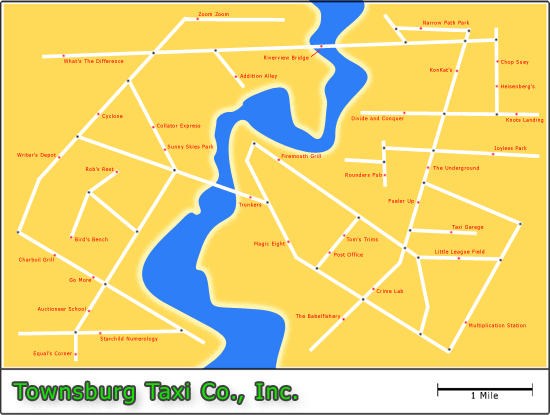

Other Languages:
COW | Whirl | 3code | Taxi
Other Languages:
COW | Whirl | 3code | Taxi
Let's be honest here, what does a programmer fundamentally do? A programmer moves data from one memory location to another. Over and over. In this respect, a programmer is not unlike a taxi driver. A taxi driver moves people from place to place all day long. The people get dropped off, do their things, and new people get loaded back up to be taken someplace else - except unlike programmers, the things taxi drivers shuffle around all day pay them for the service! Well programmers no longer need to put up with that kind if ingratitude from their data: introducting the Taxi Programming Languge!
Put away your Dilbert comic clippings and hang up your cubicle pass - you're getting out of the office and about to hit the streets of Townsburg for the famous Townsburg Taxi Company, Inc. transportation service. Townsburg is filled to the brim with bits of data that need to move from here to there and back again. It will be your duty to assist these colorful folks with their tasks in the most efficient and timely manner possible.
You will be driving a Townsburg Taxi Company, Inc. state of the art taxi cab 9000R. The 9000R gets a respectible 18 miles per gallon and can hold up to 20 gallons of fuel in a full tank. Unlike the previous model 8002GT car, the 9000R seats up to 3 passengers at one time which maximizes the profit per mile ratio meaning you get more bang for your buck than ever before.
Each day your car will be waiting for you at the Taxi Garage with a full tank of gas and an empty cash box. Each passenger pays a standard fare of 0.07 credits per mile for the distance they have been riding in the cab. Passengers are not expected to pay until they are dropped off, so be sure to collect their fare at that time. Keeping the cab full of fuel throughout the day is your responsibility, so you better be sure to make enough money that you can stop at a gas station now and then to fill up the tank. If you run out of gas there is no one to come to your rescue and you might as well forget about coming to work the next day. In any case, if you keep it moving, make some money, and bring the cab back to the garage at the end of the day, you'll do fine as an employee of Townsburg Taxi Company, Inc.
The Taxi programming language consists of instructions to you, the taxi driver. These instructions consist of directions to places to pickup or drop off passengers, where passengers are waiting to be picked up, and what to do if no one comes to the curb. Your car starts out with a full 20 gallon tank of gas and an empty cash box. The car gets 18 miles per gallon which means you cannot just drive around aimlessly all day or you'll eventually run out of gas and with an empty cash box, you won't be able to afford any more fuel. The solution to this is to pickup and drop off passengers as you move around town. They will pay you for your miles once they get where they were going and then you can pay for gas from a gas station to keep the process rolling. The fare paid by the passengers is a flat 0.07 credits per mile. Since Townsburg employs a state of the art electronic money system and your cab comes loaded with a super-accurate digital odometer, fractional credits are common and the passenger pays for exactly the distance they traveled.
Operations take place at destinations throughout Townsburg. Drop two or three passengers off at Addition Alley, and their numerical values are added together with the resulting value becoming a passenger waiting at the curb for pickup. Passenger drop off and payment happens automatically. When you are carrying one or more passengers who are going to the place you just stopped at, they will get out in the order they got into the taxi. In other words, the passenger who has been in your car and destined for that location the longest will get out first, followed by the next longest, and so on. Most destinations will result in new passengers to pick up, however they will not automatically board the taxi. You must explicitly pick them up which also allows for the passenger to declare their destination. Most places will allow any number of passengers to queue up on the curb which means you do not necessarily have to pickup the results right away - you could go and do something else and then come back for them later if needed.
When stopping at a gas station, the maximum amount of gas will automatically be bought and paid for from your store of credits in the cash box. If you have enough cash, the entire tank will be filled up. You are only charged for the exact amount of fuel you purchase. Passengers cannot be dropped off at gas stations nor can any be picked up from them.
|  |
| (click map for larger image) |
|
The best way to learn Taxi is by example, however you should be aware of a couple issues with the syntax. Below are a few sample lines:
42 is waiting at Starchild Numerology.
43 is waiting at Starchild Numerology.
"Hello" is waiting at the Writer's Depot.
Go to Starchild Numerology: west 1st left, 2nd right, 1st left, 1st left, 2nd left.
Pickup a passenger going to The Underground.
Pickup another passenger going to The Underground.
Go to Writer's Depot: west 1st right, 1st left, 1st right.
Pickup a passenger going to the Post Office.
[loop]
.. many code lines ..
Switch to plan "end_loop" if no one is waiting.
Pickup a passenger going to The Underground.
Switch to plan "loop".
[end_loop]
.. continue on with more code ..
"Hello, World!" is waiting at the Writer's Depot.
Go to Writer's Depot: west 1st left, 2nd right, 1st left, 2nd left.
Pickup a passenger going to the Post Office.
Go to the Post Office: north 1st right, 2nd right, 1st left.
Go to the Taxi Garage: north 1st right, 1st left, 1st right.
[ This is the first 30 Fibonacci numbers implemented in the Taxi programming language ]
[ Author: BigZaphod (sean -at- fifthace.com) ]
[ License: Public Domain ]
[ http://www.bigzaphod.org/taxi/ ]
1 is waiting at Starchild Numerology.
1 is waiting at Starchild Numerology.
30 is waiting at Starchild Numerology.
Go to Starchild Numerology: west 1st left, 2nd right, 1st left, 1st left, 2nd left.
Pickup a passenger going to Cyclone.
Pickup a passenger going to Rob's Rest.
Pickup a passenger going to Sunny Skies Park.
Go to Sunny Skies Park: west 1st right.
Go to Rob's Rest: south 2nd right, 1st right.
[B]
Go to Cyclone: south 1st left, 1st left, 1st left, 1st right.
Pickup a passenger going to The Babelfishery.
Pickup a passenger going to Addition Alley.
Go to The Babelfishery: south 1st left, 2nd right, 1st right.
Pickup a passenger going to the Post Office.
" " is waiting at Writer's Depot.
Go to Writer's Depot: north 1st left, 1st left, 2nd left.
Pickup a passenger going to the Post Office.
Go to Post Office: north, 1st right, 2nd right, 1st left.
Go to Rob's Rest: south 1st right, 1st left, 1st left, 1st right, 1st right.
Pickup a passenger going to Cyclone.
Go to Cyclone: south 1st left, 1st left, 1st left, 1st right.
Pickup a passenger going to Addition Alley.
Pickup a passenger going to Cyclone.
Go to Zoom Zoom: north.
Go to Addition Alley: west 1st left, 1st right.
Pickup a passenger going to Rob's Rest.
Go to Sunny Skies Park: north 1st left, 1st left, 1st left.
Pickup a passenger going to The Underground.
Go to The Underground: south 1st left, 1st right, 2nd left.
Switch to plan "C" if no one is waiting.
Pickup a passenger going to Sunny Skies Park.
Go to Sunny Skies Park: south 2nd right, 1st left, 1st right.
Go to Rob's Rest: south 2nd right, 1st right.
Switch to plan "B".
[C]
Go to the Taxi Garage: south 2nd left.
{kind=link}